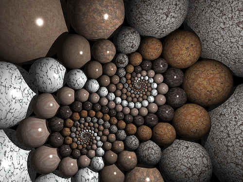
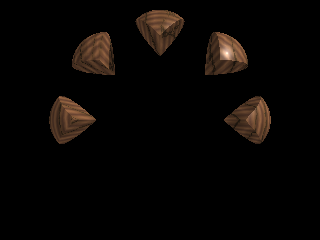

POV-Ray
Archivierte Anleitung
Dieser Artikel wurde archiviert, da er - oder Teile daraus - nur noch unter einer älteren Ubuntu-Version nutzbar ist. Diese Anleitung wird vom Wiki-Team weder auf Richtigkeit überprüft noch anderweitig gepflegt. Zusätzlich wurde der Artikel für weitere Änderungen gesperrt.
Zum Verständnis dieses Artikels sind folgende Seiten hilfreich:
POV-Ray  ist ein Raytracing-Programm mit vielen Features. Für die kommende Version 3.7 sind unter anderem die Unterstützung von Multicore-CPUs sowie Möglichkeiten zum Echtzeitraytracing geplant.
POV-Ray basiert auf einer an die Programmiersprache C angelehnten Szenen-Beschreibungs-Sprache, die Raytracing-Anwendung wird über die Kommandozeile gesteuert.
Es gibt zahlreiche Programme, die mit POV-Ray zusammenarbeiten (z. B. gibt es mit KPovModeler eine grafische Oberfläche zum Modeling).
POV-Ray kann auch zum Erstellen von Animationen eingesetzt werden.
ist ein Raytracing-Programm mit vielen Features. Für die kommende Version 3.7 sind unter anderem die Unterstützung von Multicore-CPUs sowie Möglichkeiten zum Echtzeitraytracing geplant.
POV-Ray basiert auf einer an die Programmiersprache C angelehnten Szenen-Beschreibungs-Sprache, die Raytracing-Anwendung wird über die Kommandozeile gesteuert.
Es gibt zahlreiche Programme, die mit POV-Ray zusammenarbeiten (z. B. gibt es mit KPovModeler eine grafische Oberfläche zum Modeling).
POV-Ray kann auch zum Erstellen von Animationen eingesetzt werden.
Installation¶
Installiert [1] wird der Raytracer mit dem Paket
povray (multiverse)
povray-includes (multiverse, optional)
povray-examples (multiverse, optional)
povray-doc (multiverse, optional)
 mit apturl
mit apturl
Paketliste zum Kopieren:
sudo apt-get install povray povray-includes povray-examples povray-doc
sudo aptitude install povray povray-includes povray-examples povray-doc
Wenn man einen grafischen Modeler benutzen möchte, bietet Ubuntu in der Sektion Grafik das Paket
kpovmodeler (multiverse, KDE4-Version)
mit apturl
Paketliste zum Kopieren:
sudo apt-get install kpovmodeler
sudo aptitude install kpovmodeler
Beispiel eines mit POV-Ray erzeugten Bildes¶

Doyle Spiral+Inversion, by fdecomite , Lizenz: cc-by-2.0 (Verringerte Qualität, um Bandbreite einzusparen).
Bedienung¶
POV-Ray wird über die Kommandozeile[2] bedient. Ein beispielhafter Aufruf:
povray Width=800 Height=600 +V +Iscene.pov +Oscene.png +P +SP4 +Q9 +A0.2
| Parameter: | Bedeutung |
| Width= | Breite des zu rendernden Bildes in Pixeln |
| Height= | Höhe des zu rendernden Bildes in Pixeln |
| +V | Wortreiche Ausgabe |
| +I | Dateiname der Szenen-Datei (Endung typischerweise .pov) |
| +O | Zu erzeugende Bilddatei |
| +P | Pause nach Abschluss des Renderns. Das Vorschau-Fenster soll nicht gleich geschlossen werden |
| +SP | Größe der Vorschau-Pixel zu Beginn. (Werden zunächst größere Pixel eingestellt, erhält man schneller einen Eindruck des Gesamtbildes.) |
| +Q | Qualitätsstufe. Je höher die Qualitätsstufe ist, umso mehr wird zur Berechnung des Bildes berücksichtigt (Schatten, Spiegelungen, Lichtbrechung usw.), Stufe 9 bietet vollständiges Raytracing, darüberhinaus kann noch Radiosity zugeschaltet werden |
| +A | Einstellung zum Antialiasing |
Experten-Info:
Weitere Parameter und ausführlichere Beschreibungen können der Manpage entnommen werden.
Für die Erstellung einer Szenen-Datei in der Szenen-Beschreibungs-Sprache (siehe folgender Abschnitt) kann ein Texteditor [3] nach Wahl verwendet werden.
Die Szenen-Beschreibungs-Sprache¶
Die von POV-Ray verwendete Szenen-Beschreibungs-Sprache ist angelehnt an die Programmiersprache C. Durch die Verwendung einer solchen Sprache kann die Szene durch ihren Ersteller exakt beschrieben werden, Möglichkeiten bestehen u. a. zum Erstellen von Schleifen, Kontrollstrukturen, Einlesen von Dateien und Erstellen eigener Funktionen. Beispiel:
1 2 3 4 5 6 7 8 9 10 11 12 13 14 15 16 17 18 19 20 21 22 23 24 | //example.pov #include "colors.inc" #include "textures.inc" camera { location <0,0,-7> look_at <0,0,0> } light_source { <7,7,-7> color White } #declare viertelkugel = intersection { sphere {<0,0,0>,1} box {<2,2,2>, <0,0,-2>} } #declare i = -1; #while (i < 4) object {viertelkugel translate <1.5,1.5,0> rotate z*i*45 texture{DMFWood6 scale 3}} #declare i = i + 1; #end |
Das Ergebnis sieht so aus:

Das Lesen der gut gemachten Dokumentation ist für das Erstellen eigener Szenen sehr hilfreich.
Hinweis:
POV-Ray verwendet im Gegensatz zu manchen anderen Programmen ein linkshändiges Koordinatensystem.
Mark Shuttleworth, POV-Ray und die ISS¶
POV-Ray ist vermutlich der erste Raytracer, der ein Bild im Weltraum gerendert hat:
Als Mark Shuttleworth zur Internationalen Raumstation geflogen ist, hatte er zwei Laptops mit dabei. Auf einem davon hat er im Orbit mit POV-Ray ein von berühmten Künstlern extra für diesen Zweck erstelltes Bild gerendert. Das Bild "Reach for the stars" kann unter http://www.oyonale.com/iss betrachtet werden.

- Erstellt mit Inyoka
-
 2004 – 2017 ubuntuusers.de • Einige Rechte vorbehalten
2004 – 2017 ubuntuusers.de • Einige Rechte vorbehalten
Lizenz • Kontakt • Datenschutz • Impressum • Serverstatus -
Serverhousing gespendet von